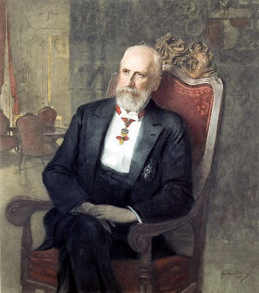
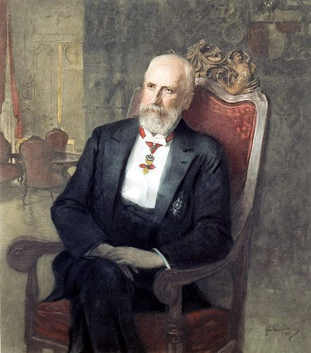

Die Denkmäler, für die wir uns interessieren, wurden im Jahr 1898 zur Feier des 40-jährigen Regierungsjubiläums des Fürsten Johann II. von Liechtenstein errichtet.
Sie wurden durch das ehemalige Forstpersonal in allen Forstrevieren der liechtensteinischen Herrschaften aufgestellt.
Die Form der Denkmäler war eine steinerne Gedenktafel mit einer tschechischen, deutschen oder lateinischen Inschrift.
Diese Gedenktafeln wurden ursprünglich mit unbearbeiteten Steinen zu einem gewissen „Grabhügel“ gemauert.
Um die Denkmäler herum wurden Eichenhaine gepflanzt.

Die Denkmäler, für die wir uns interessieren, wurden im Jahr 1898 zur Feier des 40-jährigen Regierungsjubiläums des Fürsten Johann II. von Liechtenstein errichtet.
Sie wurden durch das ehemalige Forstpersonal in allen Forstrevieren der liechtensteinischen Herrschaften aufgestellt.
Die Form der Denkmäler war eine steinerne Gedenktafel mit einer tschechischen, deutschen oder lateinischen Inschrift.
Diese Gedenktafeln wurden ursprünglich mit unbearbeiteten Steinen zu einem gewissen „Grabhügel“ gemauert.
Um die Denkmäler herum wurden Eichenhaine gepflanzt.
Im Jahr 1908 wurden einigen Denkmälern Gedenktafeln zum 50. Regierungsjubiläum von Johann II. von Liechtenstein zugefügt.
Eine ausführlichere Beschreibung der liechtensteinischen Denkmäler finden Sie in einem Artikel.
Weitere Artikel zu diesem Thema.


{kind=link}